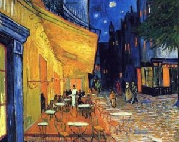

Картина написана в 1888 году, когда Ван Гог жил в Арле. Простое убранство и яркие цвета создают ощущение уюта и внутреннего беспокойства художника.
Ван Гог показал энергичную атмосферу зала с танцующими людьми. Контраст жёлтого и синего подчёркивает движение и шум праздника.
Картина передаёт трогательную сцену семьи: отец встречает ребёнка, делающего первые шаги. Тёплые оттенки символизируют нежность и заботу.

Одно из самых узнаваемых полотен Ван Гога. Художник передал таинственную атмосферу ночного кафе, наполненного золотым светом и глубокими тенями.
Художник писал, что хотел показать место, где человек может «сойти с ума». Контраст красных и зелёных тонов создаёт тревожное ощущение.
Картина написана в последние месяцы жизни Ван Гога. Спокойный пейзаж и мягкий свет луны создают ощущение тишины и одиночества.
Одно из ранних произведений Ван Гога. Он показал тяжёлую жизнь крестьян, подчёркивая честность и суровость их труда.
Единственная работа, проданная при жизни художника. На ней изображён сбор винограда при закате — символ труда и быстротечности жизни.